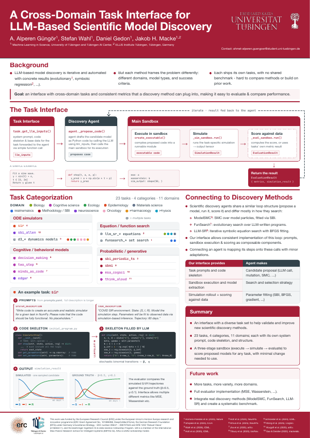
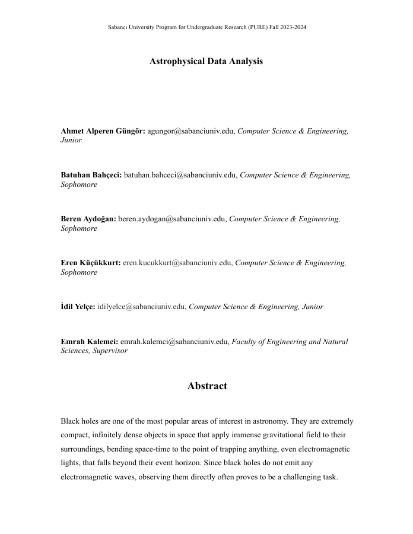
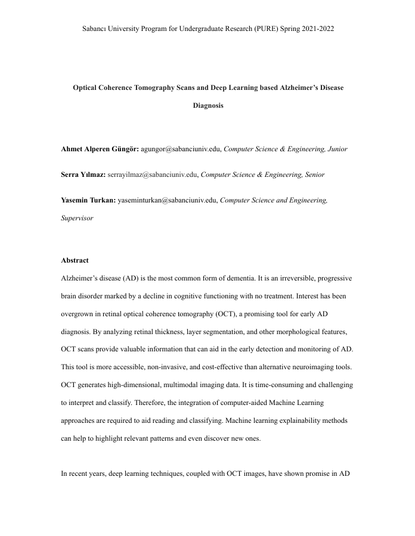
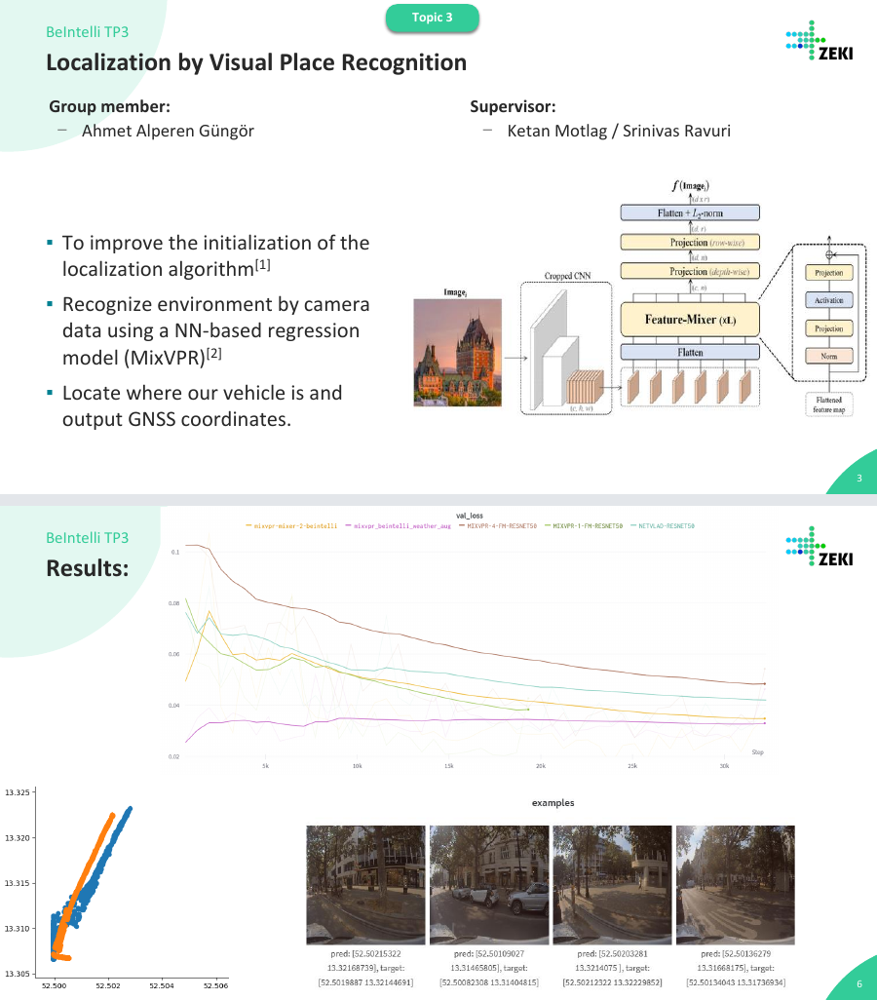
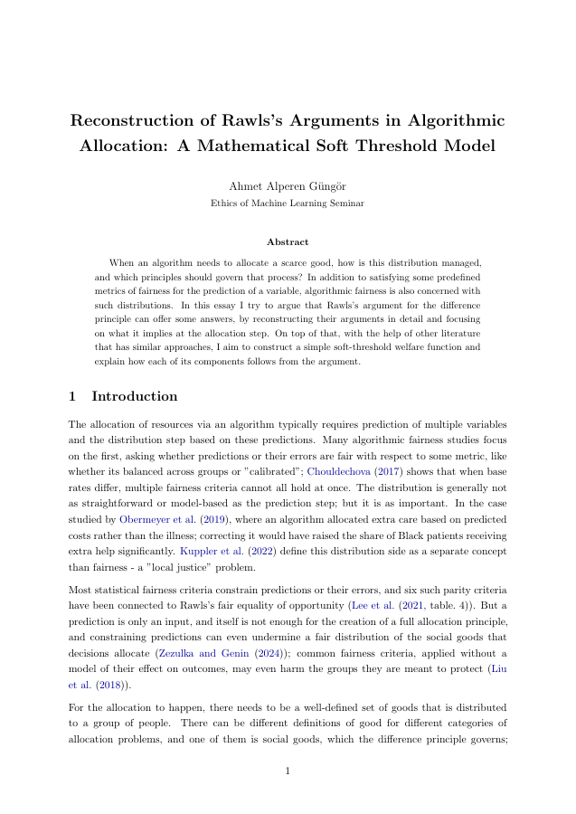
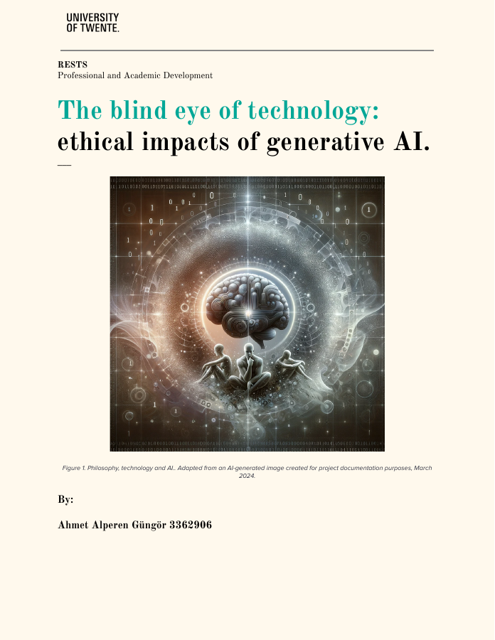
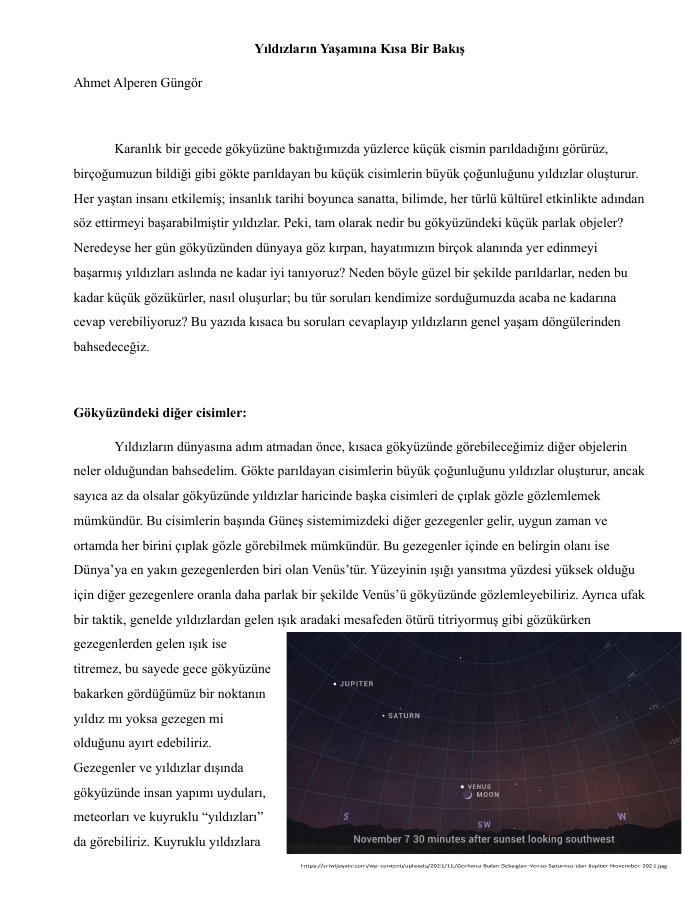

About
I am a master's student in Machine Learning at the University of Tübingen, fully funded by my DAAD scholarship. I also work as a student assistant in Prof. Jakob Macke's Machine Learning in Science lab on LLM-based scientific model discovery, where I develop an open-source task interface for proposing and evaluating scientific models across many domains through a single API.
I received my B.Sc. with high honors in Computer Science & Engineering, with a minor in Business Analytics, from Sabancı University, including an exchange semester at the University of Twente. Before Tübingen, I gained research experience on deep learning methods for visual place recognition in autonomous driving at TU Berlin, X-ray spectral analysis of black hole binaries, and deep learning–based Alzheimer's diagnosis from OCT scans.
Research interests. I am interested in applying machine learning methods across scientific domains. Early in my career I used mathematical and statistical models, then deep learning models, and now I work with probabilistic and generative models (especially LLMs) for general scientific research. I also have experience in engineering and system design, which helps me focus on hands-on applications in this area.
Publications & Presentations
-
A Cross-Domain Task Interface for LLM-Based Scientific Model Discovery [PDF]
Poster, Cambridge ELLIS Summer School on Probabilistic Machine Learning, 2026
An interface with 23 tasks across 11 scientific domains, from ODE epidemiology models to cognitive neuroscience. It gives LLM-based discovery methods standardized prompts, code skeletons, sandboxed execution and scoring.

-
Astrophysical Data Analysis [PDF]
Sabancı University Program for Undergraduate Research (PURE), Fall 2023–2024
X-ray spectral analysis of black hole binaries from NASA NICER hard-state data for MAXI J1820+070, using Python and XSPEC.

-
Optical Coherence Tomography Scans and Deep Learning Based Alzheimer's Disease Diagnosis [PDF]
Sabancı University Program for Undergraduate Research (PURE), 2023
Transfer learning on 3D retinal OCT scans for early Alzheimer's diagnosis, comparing CNN backbones (ResNet, Inception, EfficientNet, Med3D).

-
Localization by Visual Place Recognition [Slides]
2023 Internship Group Presentations, Berlin, 31.08.2023
Estimating the GPS position of an autonomous vehicle from RGB camera images. Combining MixVPR with an MLP regressor reduced error by more than 35% on the Berlin dataset.

-
Reconstruction of Rawls's Arguments in Algorithmic Allocation: A Mathematical Soft Threshold Model [PDF]
Essay, Ethics of Machine Learning Seminar, University of Tübingen
Reconstructs Rawls's argument for the difference principle and applies it to the allocation step of algorithmic decision-making, proposing a simple soft-threshold welfare function.

-
The Blind Eye of Technology: Ethical Impacts of Generative AI [PDF]
Essay, Professional and Academic Development, University of Twente, 2024

-
Yıldızların Yaşamına Kısa Bir Bakış (A Brief Look at the Life of Stars) [PDF]
Science Canteen, popular-science article in Turkish

Projects
-
Prompting Small LLMs for Turkish Financial Event Detection
Understanding Language Models · University of Tübingen
Tests whether small open LLMs (3–4B) detect high-impact events in Turkish financial headlines better with English translation or few-shot prompting. Uses 850 self-labelled headlines and compares against a keyword lexicon and frontier LLMs.
-
CrossQ-SAC: RL Agent for a Hockey Tournament
Reinforcement Learning · University of Tübingen
A continuous-control agent that goes from SAC to SAC v2 to CrossQ, which removes target networks in favor of batch normalization. It was trained and deployed in the course's hockey tournament.
-
OUATIH: The Film Industry After COVID-19
Data Literacy · University of Tübingen · WiSe 2025/26
Measures structural shifts in the film industry across pre-COVID, COVID and post-COVID periods using TMDb and IMDb data, with an XGBoost classifier and statistical tests.
-
NoteBridge: Forum App for Musicians
Web Technology · University of Twente · Spring 2024
An interactive forum web app for musicians, built for the company NoteBridge by a team of four.
-
DiSUcord: Client–Server Messaging App
CS408 Computer Networks · Sabancı University · Fall 2023
A client–server messaging application built on sockets.
-
Quiz Ninja: Mobile Quiz App
CS310 Mobile Application Development · Sabancı University · Fall 2023
A mobile quiz application developed in a team of two.
-
Weezart: Music Analysis & Recommendation Platform
Software Engineering team project · Sabancı University
A web and mobile platform for managing your music library, getting recommendations and analyzing your and your friends' taste through the Spotify API. I worked on the backend team.
-
Elevator Controller in Verilog
CS303 Logic & Digital System Design · Sabancı University · Fall 2022
A roughly 1000-line hardware design of an elevator control system.
Education
-
M.Sc. in Machine Learning, University of Tübingen 2025 – present
Fully funded by a DAAD master's scholarship.
-
Exchange Semester, University of Twente, Netherlands Spring 2024
Term GPA 4.0, ranked #1.
-
B.Sc. in Computer Science & Engineering, Sabancı University 2020 – 2025
Minor in Business Analytics. GPA 3.77/4.00, Dean's High Honor List every semester. Full scholarship and Sakıp Sabancı High Success Scholarship.
Experience
-
Student Assistant & ELLIS Guest Researcher, Machine Learning in Science Lab, University of Tübingen 02/2026 – present
LLM-based scientific model discovery with Prof. Jakob Macke: a decoupled task interface where LLMs propose models and pluggable fitters and metrics evaluate them.
-
Full Stack Software Engineer, Beakwise, Istanbul 07/2024 – 07/2025
Insurance sales portal and Customer Data Platform in Rust (Actix-Web) and Vue.js.
-
Undergraduate Researcher, Sabancı PURE, Istanbul 10/2023 – 01/2024
X-ray spectral analysis of black hole binaries with Prof. Kalemci.
-
AI Research Intern, DAI-Labor, TU Berlin & GT-ARC 07/2023 – 09/2023
Visual place recognition for autonomous vehicle localization (BeIntelli project).
-
Undergraduate Researcher, Sabancı PURE, Istanbul 03/2023 – 06/2023
Deep learning for early Alzheimer's diagnosis from 3D OCT scans.
-
AI/ML Engineer Intern, SemperTech, Istanbul 02/2023 – 04/2023
Intent detection and slot filling for a smart-appliance chatbot (Keras).